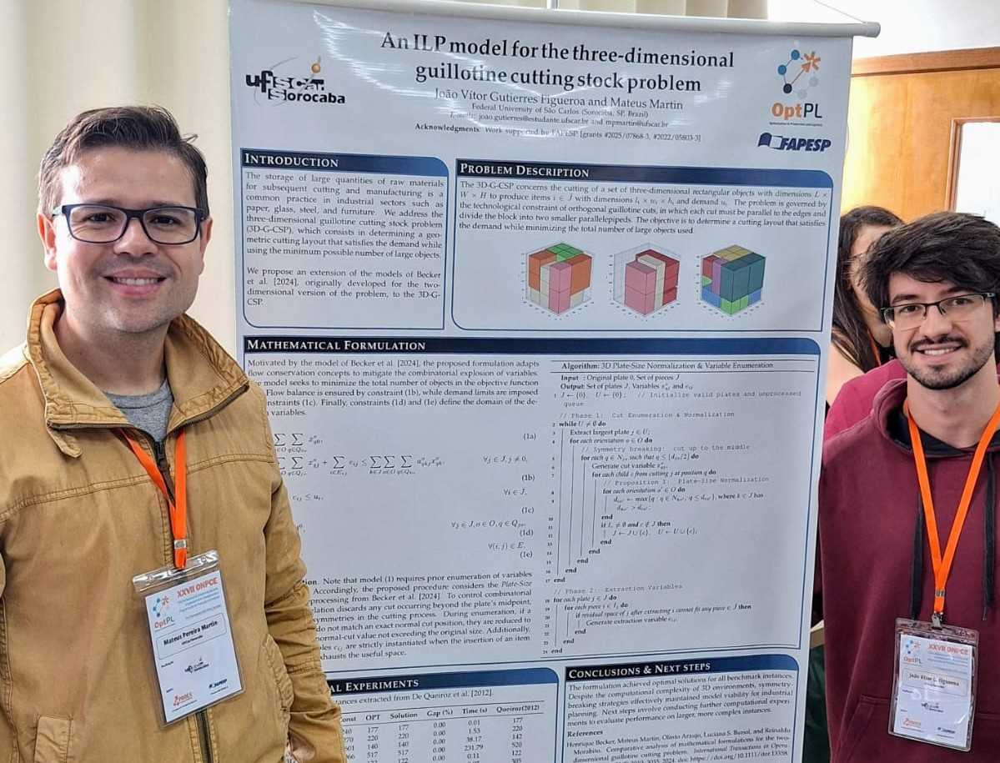

Na fábrica, a eficiência com que uma chapa de vidro, madeira ou aço é dividida pode definir não apenas a produtividade, mas a viabilidade econômica de uma operação. Foi olhando para esse gargalo que pesquisadores do Departamento de Engenharia de Produção da UFSCar (Campus Sorocaba) desenvolveram um novo método exato para maximizar o uso de matérias-primas e minimizar o desperdício industrial.
Publicado em julho de 2026 na revista Pesquisa Operacional para o Desenvolvimento (PODes), o artigo assinado pelo aluno de Iniciação Científica Vitor Ferrari Henriques e pelo professor Mateus Martin aborda o problema de corte guilhotinado restrito em duas e três dimensões, propondo uma extensão de um algoritmo combinatório clássico da década de 1980 (algoritmo de Pearl Wang).
O diferencial da nova abordagem é o controle explícito do número de estágios de corte (k-estágios), oferecendo às indústrias de vidro, madeira e aço uma ferramenta para equilibrar o aproveitamento máximo da matéria-prima com a produtividade e as limitações do maquinário.
A matemática no dia a dia da produção
Na prática, a pesquisa traduz problemas reais em modelos matemáticos para gerar soluções mais efetivas. O processo industrial de corte muitas vezes esbarra em um dilema: padrões de corte muito complexos podem economizar material, mas tornam a operação excessivamente lenta.
Para explicar o impacto prático do algoritmo, Vitor Henriques utiliza uma analogia direta com o dia a dia da manufatura: o problema consiste em pegar uma chapa grande de madeira, vidro ou metal e cortá-la em peças menores. Dependendo da forma como esses cortes são executados, pode haver um grande desperdício de material ou um aproveitamento quase total da chapa. O algoritmo desenvolvido busca justamente encontrar as melhores formas de realizar esses cortes, respeitando as limitações do processo produtivo para reduzir o desperdício de matéria-prima e organizar a produção.
Ao permitir que o gestor defina o número máximo de estágios guilhotinados permitidos na máquina, o método computacional entrega a melhor taxa de utilização possível para aquela realidade específica, fornecendo subsídios diretos para a tomada de decisão em contextos industriais.
O ciclo de formação na ciência

A publicação do artigo ganha um peso extra por ter Vitor como primeiro autor ainda durante a graduação. Foram meses de estudos, programação e testes de resultados até o projeto final. "Ver todo esse trabalho se transformar em um artigo foi muito gratificante. Além da publicação em si, acho que o mais importante foi tudo que aprendi durante o processo e o quanto amadureci na forma de estudar e desenvolver uma pesquisa", reflete o estudante.
Para o professor Mateus Martin, ver seu primeiro orientando de Iniciação Científica na UFSCar alcançar esse resultado evidencia a importância da universidade na formação de novos especialistas e no retorno do investimento público para a sociedade. "É gratificante ter um aluno de IC já publicando em periódicos científicos com problemas aplicados. É mais um 'cortador' que surge no grupo", brinca o docente.
A conquista de Vitor resgata, de forma muito direta, a própria trajetória de seu orientador. O interesse de Mateus pela Pesquisa Operacional foi despertado ainda na época da graduação, durante uma Iniciação Científica orientada pelo professor Antonio Carlos Moretti, que integrava o Projeto Temático na época. O desenvolvimento daquela pesquisa foi um marco tão importante que o trabalho acabou premiado na Unicamp e foi levado para ser apresentado na ONPCE de 2013, impulsionando Mateus rumo à sua primeira publicação. Hoje, ao orientar Vitor, o professor devolve à academia o incentivo que recebeu, mantendo vivo um ciclo geracional essencial dentro da própria rede de pesquisadores.
Essa continuidade ganha ainda mais força graças ao ecossistema do Projeto Temático OptPL. Estar inserido em uma rede estruturada transforma o horizonte do estudante em formação, como destaca Vitor. "A iniciação científica deixa de ser algo restrito apenas ao aluno e ao orientador", explica ele. "Você passa a ter contato com vários pesquisadores, conhecer outros trabalhos e perceber que existem muitas pessoas estudando problemas diferentes dentro da mesma área."